ADELIE DRAW · DIGITAL STATIONERY
스티커를 골라,
오늘 한 장.
아델리드로우의 스티커팩을 고르고, 사진과 종이 위에 그림과 글을 놓습니다. 만든 페이지는 저장해 두었다가 다시 열어 이어서 편집할 수 있습니다.
현재 iOS · Android용 앱을 준비하고 있습니다.
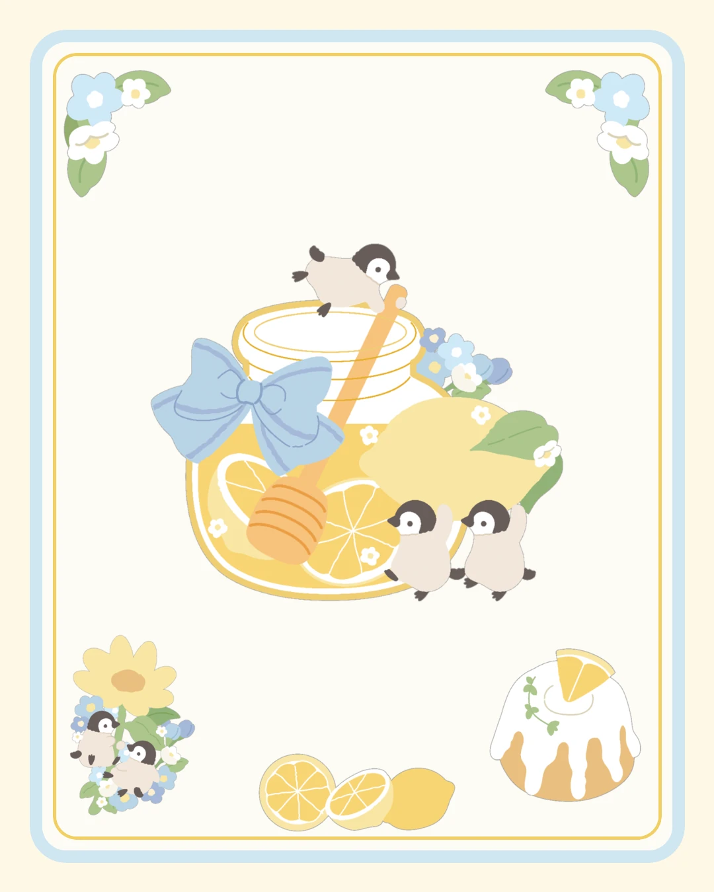
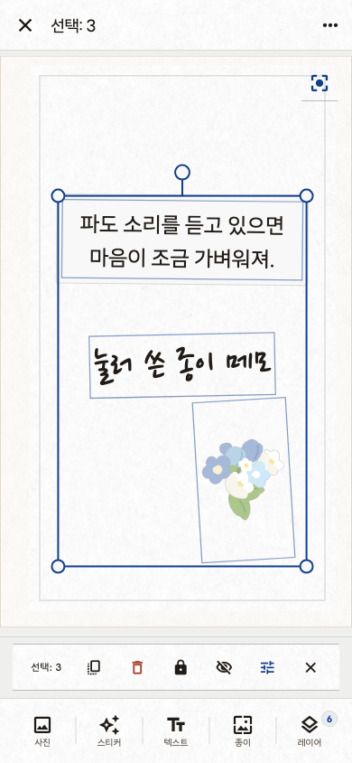
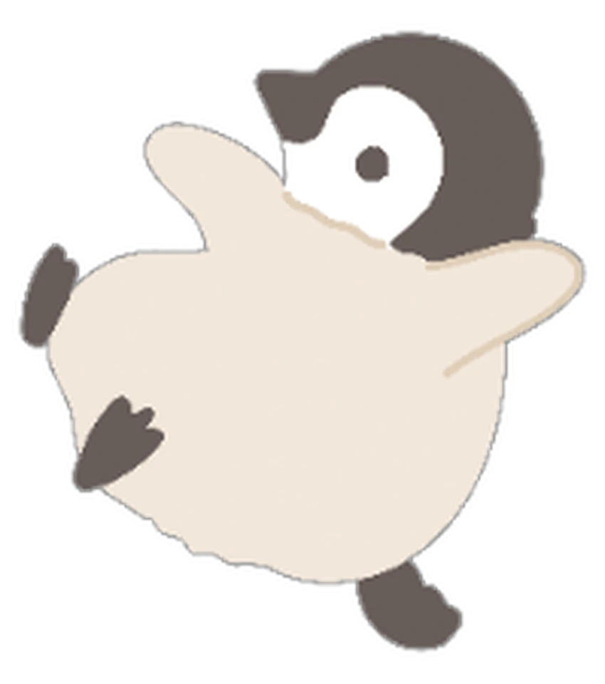
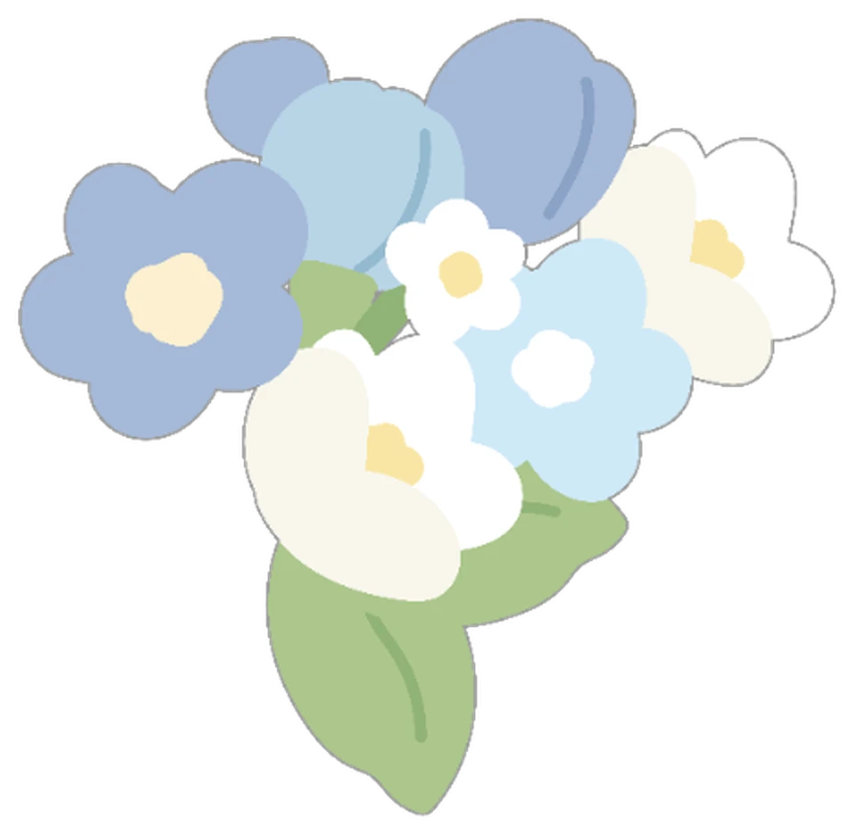
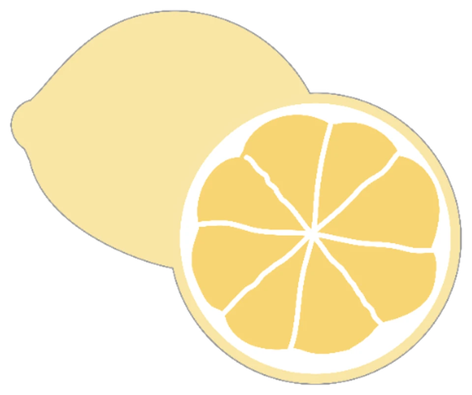
그림 하나에서 시작해도 충분합니다.


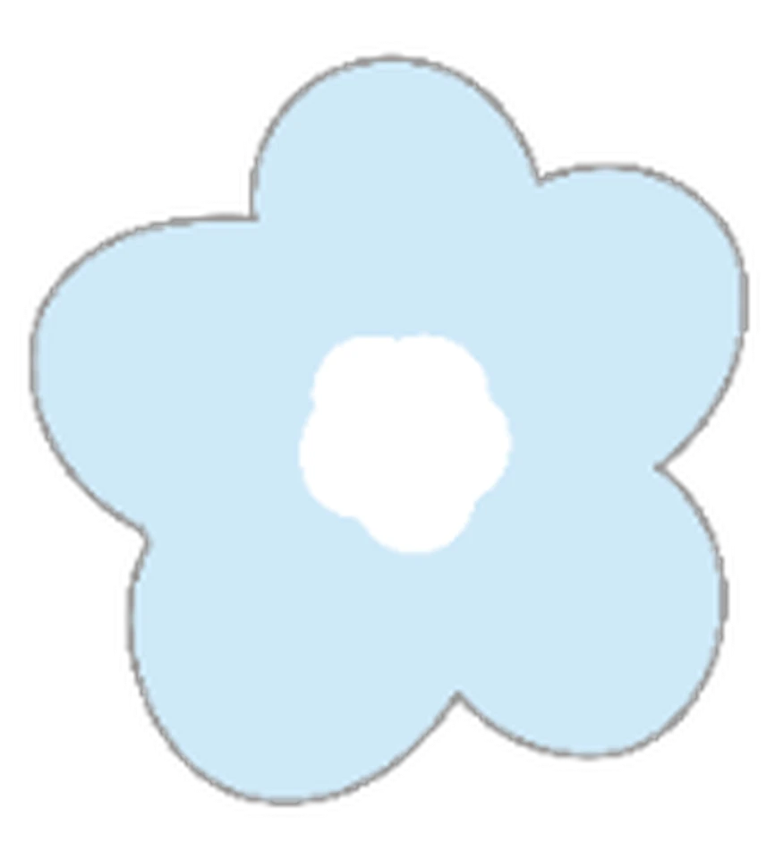
FROM PACK TO PAGE
붙이고,
쓰고,
남깁니다.
빈 종이에서 시작해도 되고, 사진 한 장을 불러와도 됩니다. 스티커의 크기와 위치를 바꾸고 짧은 글을 더해 한 장을 완성합니다.
- 재료
- 사진 · 종이 · 스티커 · 텍스트
- 편집
- 선택 · 복제 · 정렬 · 순서 변경 · undo / redo
- 보관
- 기기에 저장 · 다시 열어 편집 · PNG 저장 · 공유
SCREEN INDEX
앱 안에서는
이렇게 이어집니다.
현재 개발 빌드의 실제 화면입니다. 홈에서 팩을 보고, 만들고, 저장한 페이지를 다시 찾는 흐름입니다.
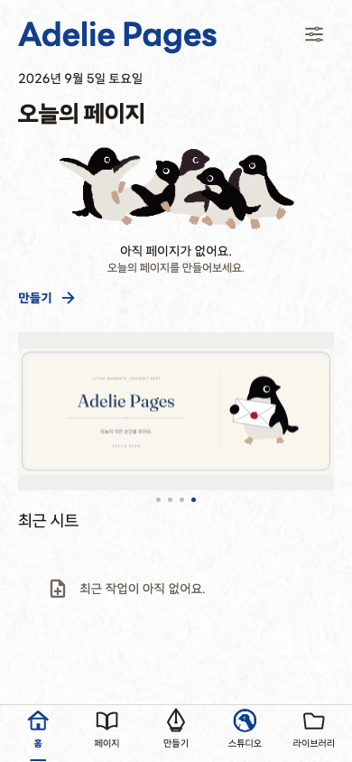
오늘 만들기, 추천 팩, 최근 작업.
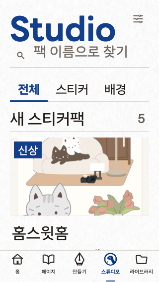
팩과 신상품을 둘러봅니다.
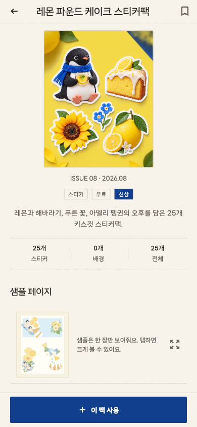
구성과 활용 예시를 확인합니다.
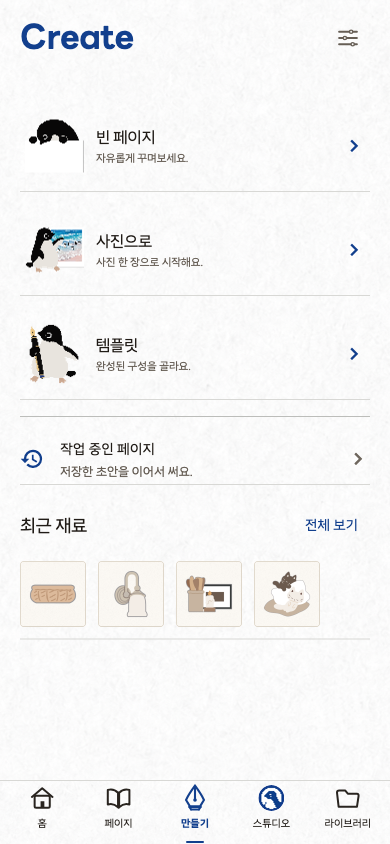
빈 페이지, 사진, 저장본에서 시작합니다.
사진·스티커·글을 배치합니다.
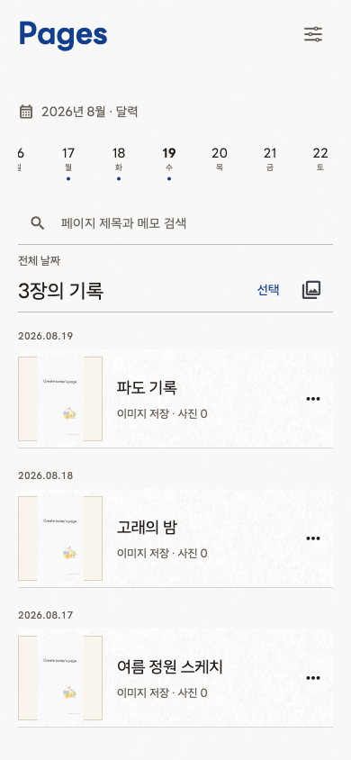
저장한 페이지를 다시 찾습니다.
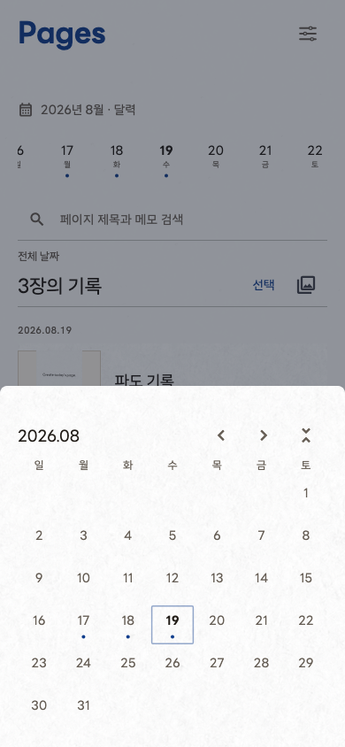
날짜별로 만든 페이지를 봅니다.
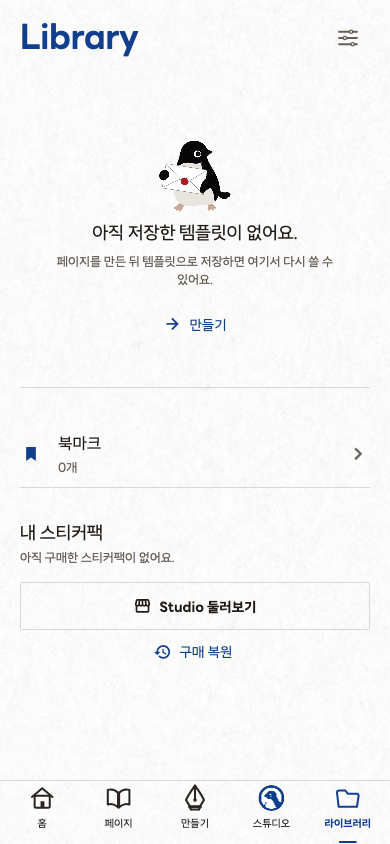
저장한 재료와 팩을 모아둡니다.
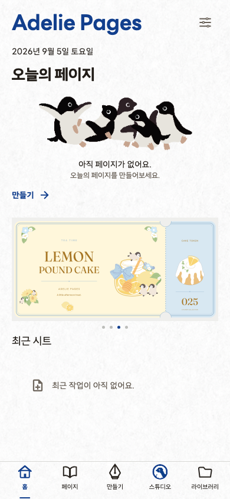
추천 팩에 따라 홈의 내용이 바뀝니다.
KEEP YOUR PAGES
만든 한 장은
다시 꺼내 봅니다.
페이지는 현재 기기 안에 저장됩니다. 날짜와 검색으로 찾아 다시 편집하고, 완성한 결과는 이미지로 저장하거나 공유할 수 있습니다.
CURRENT BUILD · SEP 2026
지금 확인되는 범위.
- 플랫폼
- iOS · Android / phone · tablet
- 언어
- 한국어 · English · 日本語 · 中文
- 저장
- 현재 기기 내 저장. 클라우드 백업은 아직 없습니다.
- 내보내기
- PNG 저장 · 시스템 공유
- 출시
- 스토어 공개 배포 준비 중